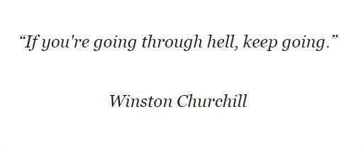

In such unstable times, the only way to overcome it is to keep moving forward. Be strong!
Originally published on LinkedIn
In such unstable times, the only way to overcome it is to keep moving forward. Be strong!
#keepmovingforward #bestrong #staymotivated
